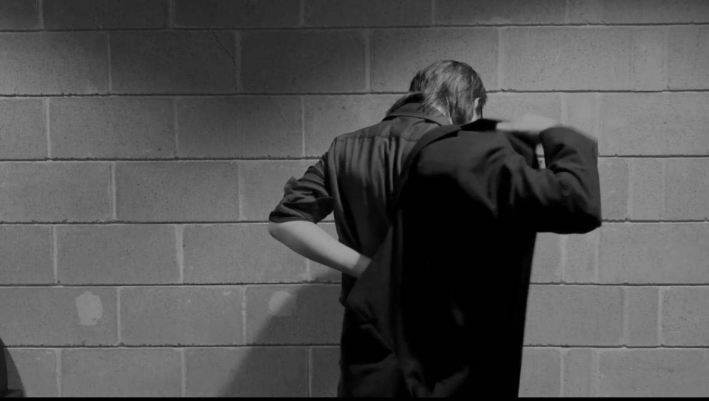
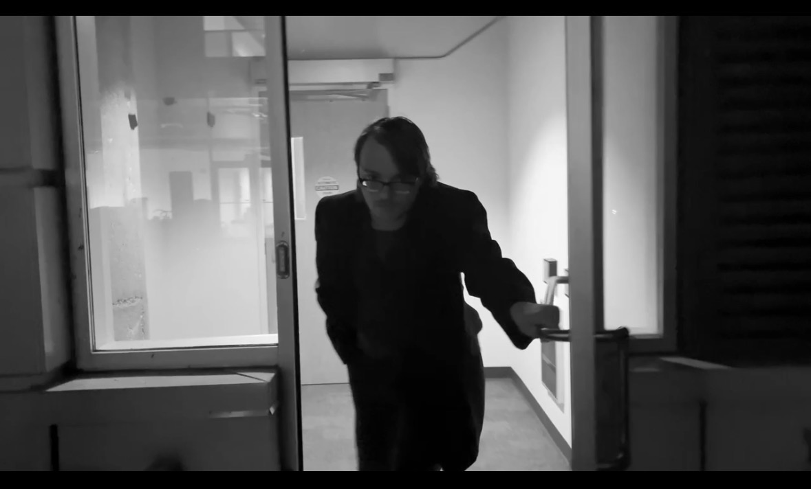
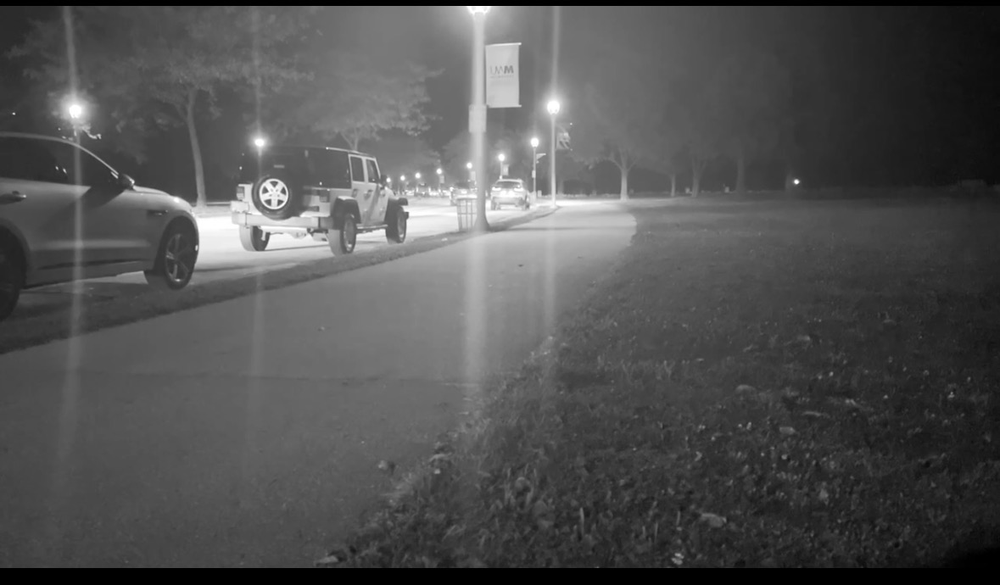
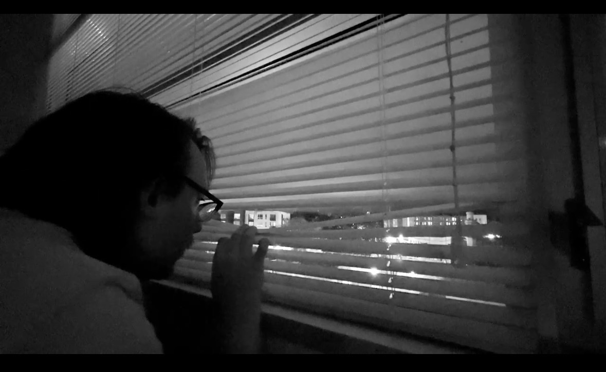

About the Film
Synopsis
This experimental film noir style focuses on a narrative that plays with the idea of grief and guilt. Guilt is a heavy emotion that can surprise you at any moment. It is a heart broke, a regret, or the wish of wanting to undo a mistake that was done. The film follows a character who is struggling with a crime that was impulsively committed. The atmosphere that was created is a chiaroscuro nightmare. The character has a internal war that is represented with the darkness and light fighting for spots in the frame.
Director's Note
This little film was filmed on an Iphone 16 for a typography class to exchange with a classmate.
After the assignment was finished, I still wanted to create something over the winter break.
I remembered my process from editing my classmate's film since I was not in the same headspace
as I filmed it. My process was to watch the film over and over again. I would take little notes
about the theme or what I saw. The character was never really facing the camera so their gaze was
never as apparent. The averted gaze is something that alludes to the idea of guilt and not wanting
to address what happened. The gaze is something that is quite interesting to play with and highly
inspired the title of Guilty. The overall theme would be the emotion of guilt and is alluded
to the worst things that humans can do.
The filming locations were at the balcony on Kenilworth Studios, and down by McKinley Park. There
was a little house or shed down by McKinley Park. At least it looked like a shed in the darkness. It
created this omnious atmosphere and I knew that was one of the sets that I needed to include. There is a
brightly lit tree where the actor is walking from the tree to the darkness.



